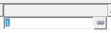

Contours
Contour selection
Contours: Define contours for turning operations. These may correspond to the contour of the turning model.
Contour attributes
Start point / endpoint: define the start and end points for machining, either by selecting a point or by entering coordinates.
Reverse: Invert the machining direction of the selected contour.
Segments
Assign segments of a contour a cutting speed and feedrate to reduce tool wear and improve surface quality.
Select the desired contour and use Edit segments to open the Segments dialog.
Add through three points: Select start point, end point and a further point on the contour.
Add through curves: Select a curve. The starting point and end point are calculated automatically.
The Cutting speed and Feedrate technology values depend on the usage and can be modified either manually or on the basis of factors.
Change manually
-
Select segment.
-
Click the icon for cutting speed or feedrate. The icon changes.
.
-
Enter the required value.
Change on the basis of factors
-
Select the segment, click the link icon and enter the required factor directly.
-
Click the link icon.
-
Enter the required factor directly.
|  |
Cutting speed and Feedrate apply to the Usage that is set on the Tool dialog page under Cutting profile. The values are displayed for each contour segment.
 |
behavior in sharp corners
Angle (1): angle between two contour elements to allow chamfering or rounding.
Automatic corner brake: enable when sharp corners of a contour should be automatically rounded or chamfered. Define the chamfer length (2) and the chamfer angle (3) for chamfering (A); for the rounding (b), define the rounding radius (4).
 |
A contour can be either chamfered or rounded in a single step. If both chamfering and rounding should take place, define the step twice and combine both steps in a linking job.
The Automatic corner brake function is available for outer edges of the turning contour. Fillets or chamfers of inner edges should already be included in the rotation model.